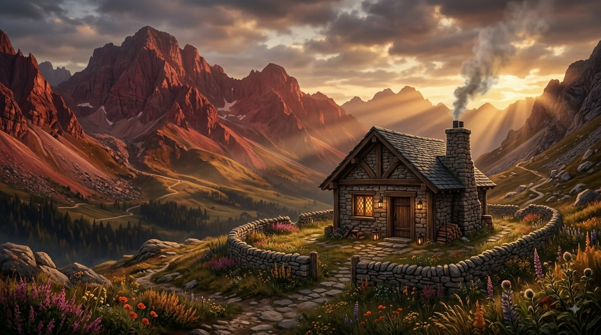
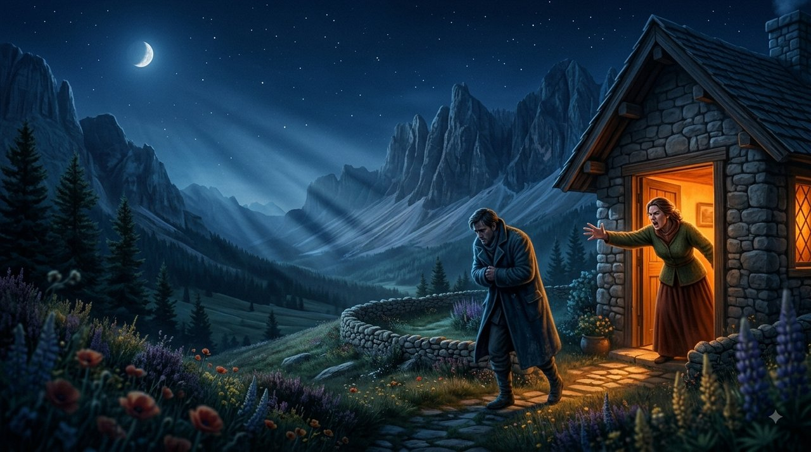
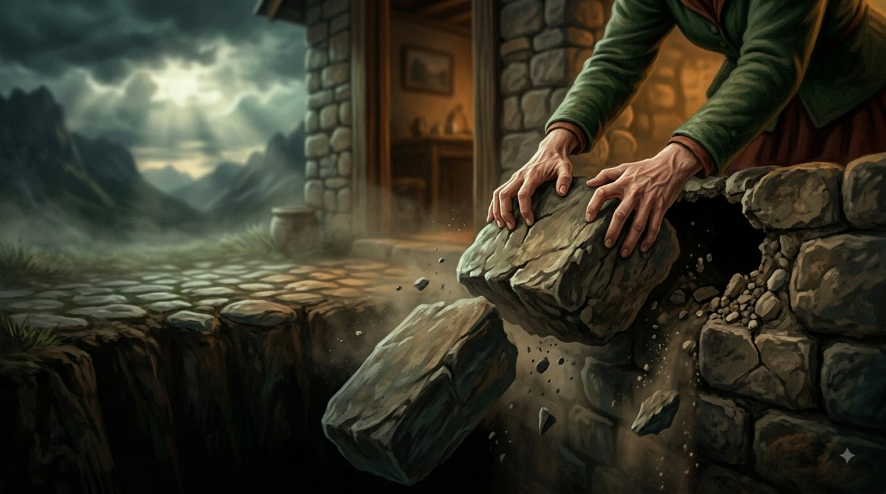
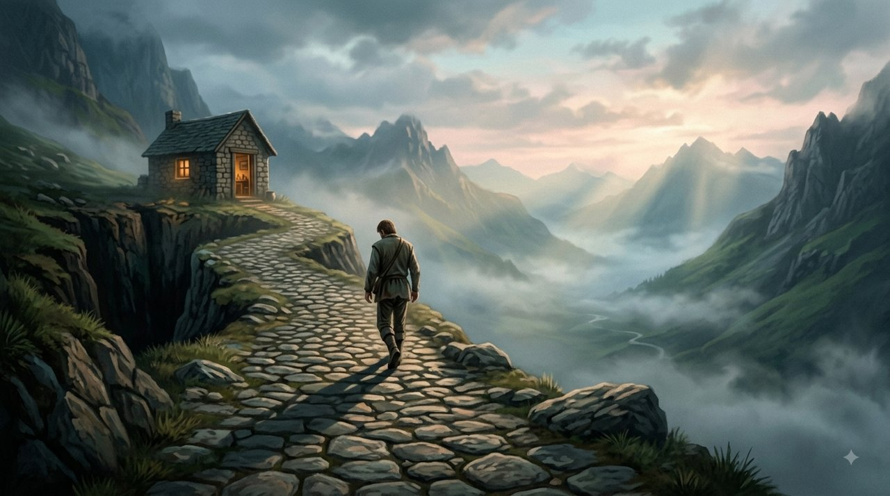
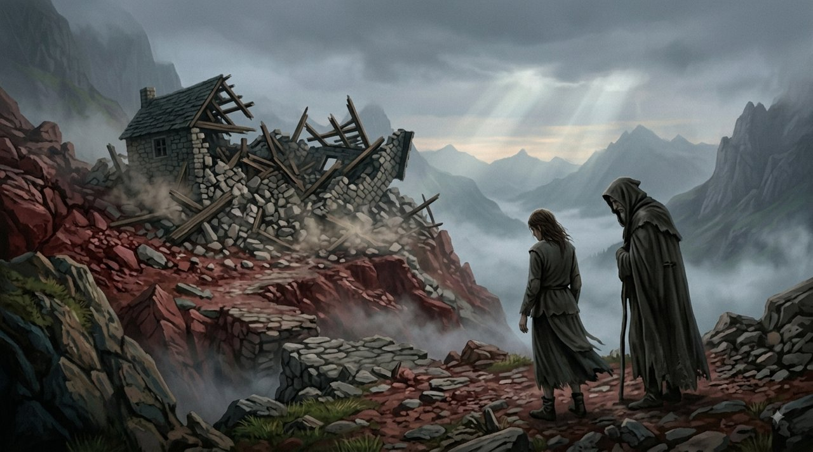

On the slopes of the Crimson Mountains, in a warm cabin built of solid hewn stone, lived Dan and Noit. Dan had laboured for years to lay deep foundations, to build walls that would stand up to storms and to make their home a fortress of peace and love for their family.

But Noit had a habit that cast a heavy shadow over the house: every time an argument broke out between them, every time she did not get exactly what she wanted, or every time she felt hurt and frustrated, she did not look for a way to talk. Instead, she drew the heaviest weapon of all. She would run to the front door, slam it hard and shout: "Get out of the house! Never come back here! I am breaking it all, we are going to dissolve this, we will take this house apart today!"

Every time she flung those words at him, she would violently tear one stone out of the cabin's foundations and hurl it into the abyss. She believed that this would frighten him, force him to fold, and make him crawl on all fours to prove that he loved her.
Dan would stand outside in the cold, his heart bleeding. He would try to make peace, to calm her, to promise it would be better – only so that she would not take apart the work of their lives. He would come back inside, hold her quietly, and try to put the stones back in their place.
But the ritual repeated itself again and again. Dozens of times a year: an argument about a family visit – "Get lost, we are filing for dissolution!" (another stone torn from the wall). A disagreement over a word that was said – "You are not a husband, you are an enemy, we are finished!" (another roof beam broken).
The Time He Walked Away
One day a small argument broke out over something trivial. Noit, used to the power of the threat, screamed again: "That is it! This time it is final! Get out of the house and you will never see me again!"

Dan looked at her in a long silence. His face was not angry, but empty and utterly tired. He did not plead, did not ask forgiveness and did not try to explain. He simply turned, stepped over the threshold, and walked slowly away down the path.
Noit waited. She expected him to stand by the window, to knock at the door, to beg her to let him come back. But the hours went by, and the silence outside only deepened.
Suddenly there was a deep and menacing creak. Noit looked up in horror: the ceiling had begun to sag, the walls were leaning to one side, and deep cracks were opening in the stones.

Suddenly the mountain warden stood in the doorway. Noit cried out to her, weeping: "The cabin is collapsing! Save me! Dan left and destroyed my home!"
The warden looked at the crumbling walls and said in a penetrating voice: "Dan did not destroy this house, Noit. You did it with your own hands. A home is not an arena for games of power, and a marriage is not a rope you stretch to breaking point in every storm of feeling. Every time you drove him out, every time you threatened to smash it all and take everything apart, you pulled another stone from the foundations. You used the final threat as an everyday weapon – until there was nothing left to hold the roof over your head."
Noit stood alone inside the ruins of the collapsed cabin.
Whoever uses the threat of banishment and dissolution to win love will discover, in the end, that they have destroyed the only security on which love can stand.